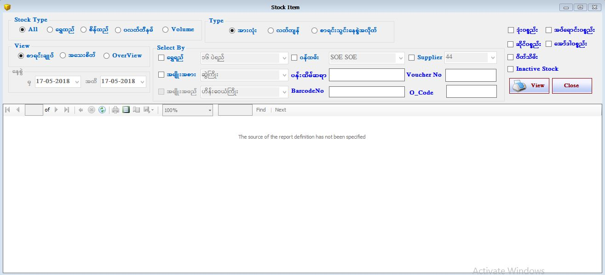

Stock Items Report

- Reports အောက်ရှိ Stock Items Form ကိုဖွင့်ပါ။
- Stock Items Form သည် ဆိုင်ပေါ်တွင်တင်ရောင်းထားသော ပစ္စည်းစာရင်းများကိုပြန်လည်ကြည့်ရှူသော Form ဖြစ်သည်။
- Stock Type တွင် မိမိကြည့်လိုသော All၊ရွှေထည်၊စိန်ထည်၊ပလတ်တီနမ် ကို on ထားပါက ဆိုင်တွင် Barcode တပ်ထားသော ရောင်းချပြီးပစ္စည်းများနှင့် မရောင်းချရသေးသော ပစ္စည်းစာရင်းများကိုတွေ့ရမည်ဖြစ်ပြီး ရောင်းချပြီး ပစ္စည်းဖြစ်ပါက အရောင်နှင့် ပြသနေ မည်ဖြစ်သည်။ (သို့) Volume Stock ကို on ထားပါက Volume အလိုက် Barcode တပ်ထားသောရောင်းချပြီး ပစ္စည်းများနှင့် မရောင်းချရသေးသောပစ္စည်းစာရင်း များကို တွေ့ရ မည်ဖြစ်ပြီး ရောင်းချပြီး ပစ္စည်းဖြစ်ပါက အရောင်နှင့် ပြသနေမည်ဖြစ်သည်။
- Stock Items ရှိ ဆိုင်တင်ရောင်းထားသော ပစ္စည်းစာရင်းအားလုံးကို ကြည့် လိုပါက အားလုံး Button ကို on ထားပါ။ ရောင်းချပြီး ပစ္စည်းဖြစ်ပါက အရောင်နှင့်ပြသနေမည်ဖြစ်ပြီး Exit Date တွင် ရောင်းချသောနေ့စွဲကို ပြသ နေမည်ဖြစ်သည်။ ဆိုင်ရှိလက်ကျန် ပစ္စည်းအားလုံးကို ကြည့်လိုပါက လက်ကျန် Button ကို on ထားပါက ဆိုင်တင်ရောင်းပစ္စည်းလက်ကျန်များ နှင့် အပ်ရောင်းလက်ကျန် များကို ပါတွေ့ရမည် ဖြစ်သည်။ စာရင်းသွင်းနေ့စွဲအလိုက် Button ကို on ထားပါက နေ့စွဲအလိုက် သွင်းထားသော ပစ္စည်းစာရင်း များကို တွေ့ရမည် ဖြစ်သည်။ ဆိုင်ရှိလက်ကျန်ပစ္စည်း ကိုသိလိုပါက ဆိုင်ပစ္စည်းလက်ကျန် Button ကို on ပြီး ကြည့်နိုင်ပါသည်။ အပ်ရောင်းပစ္စည်းလက်ကျန် များကို ကြည့်ရှုချင်ပါက အပ်ရောင်းပစ္စည်းလက်ကျန် Button ကို on ပြီး ကြည့်နိုင်ပါသည်။
- ဆိုင်တင်ရောင်း ပစ္စည်းများကို စာရင်းချုပ် နှင့် အသေးစိတ် ကြည့်ရှုနိုင်ပါသည်။ Over View ကို on ထားပါက ဆိုင်ရှိလက်ကျန် ပစ္စည်းစာရင်းချုပ်နှင့် အော်ဒါ ပစ္စည်းစာရင်းချုပ်တို့ကို ရွှေရည် အလိုက်တွေ့ရမည် ဖြစ်သည်။
- Gold Quality အလိုက်ကြည့်ချင်ပါက Gold Quality ၏ check box ကို on ထားပေးပါ။ (သို့) Item Category အလိုက်ကြည့်ချင်လျှင် Item Category ၏ check box ကို on ထားပေးပါ။ (သို့) နှစ်မျိုးလုံး ကြည့်ချင်ပါက Gold Qualityနှင့် Item Categoryနှစ်မျိုးလုံးကို on ထားပြီး Data များကိုပြန်လည်ကြည့်ရှုနိုင် ပါသည်။
- မိမိဆိုင်တွင် အပ်ရောင်းပစ္စည်းများရှိပါက ပန်းထိမ်ဆရာ text box တွင် ပစ္စည်းအပ်ထားသူ၏ အမည် ဖြည့်စွက်ပြီး view button နှိပ်၍ကြည့်ရှုနိုင်ပါသည်။
- Barcode No text box တွင် ဆိုင်ရှိ Barcode No တစ်ခုကို ရိုက်ထည့်ပြီး view button နှိပ်ကြည့်ပါက ၄င်းပစ္စည်းသည် ရောင်းပြီးသားဖြစ်ပါက အရောင်နှင့်ပြနေမည်ဖြစ်ပြီး မရောင်းရသေးသော ပစ္စည်းဖြစ်ပါက အရောင်မပါဘဲ ပြသနေမည် ဖြစ်သည်။ Barcode Track အနေနှင့် အသုံးပြုနိုင်ပါသည်။
- Fixed Price(သတ်မှတ်ဈေးနှုန်း ) ဖြင့် သတ်မှတ်ထားသော ပစ္စည်းစာရင်း ကြည့်လိုလျှင် Fix Price ၏ check box ကို on ထားပေးပါ။ (သို့) Order မှာထားသော ပစ္စည်းစာရင်းကို ကြည့်ချင်ပါက Order ၏ check box ကို on ထားပေးပါ။ (သို့) Closed( ပိတ်သိမ်း) ထားသော ပစ္စည်းစာရင်း ကြည့်လိုပါက Closed ၏ check box ကို on ထားပေးပါ။ (သို့) သုံးမျိုးလုံး ကြည့်ချင်ပါက Fixed Price, Order နှင့် Closed သုံးမျိုးလုံးကို on ထားပြီး Data များကိုပြန်လည်ကြည့်ရှုနိုင် ပါသည်။
- နေ့စဉ်ပစ္စည်းအဝင်အထွက်စာရင်းချုပ်ကို on ထားပါ ရွှေရည်အလိုက် ပစ္စည်းများ၏ တနေ့တာ အဝင်၊ အရောင်း၊ လက်ကျန် များကို တွေ့ရမည် ဖြစ်သည်။
- Stock Items Report Form အား အသုံးပြုပြီးပါက Close Button ကိုနှိပ်၍ ပိတ်နိုင်ပါသည်။